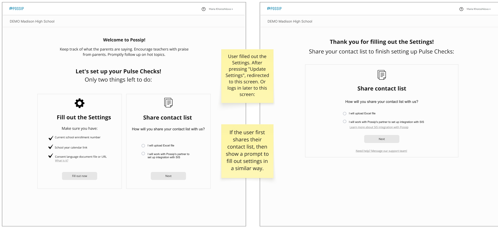
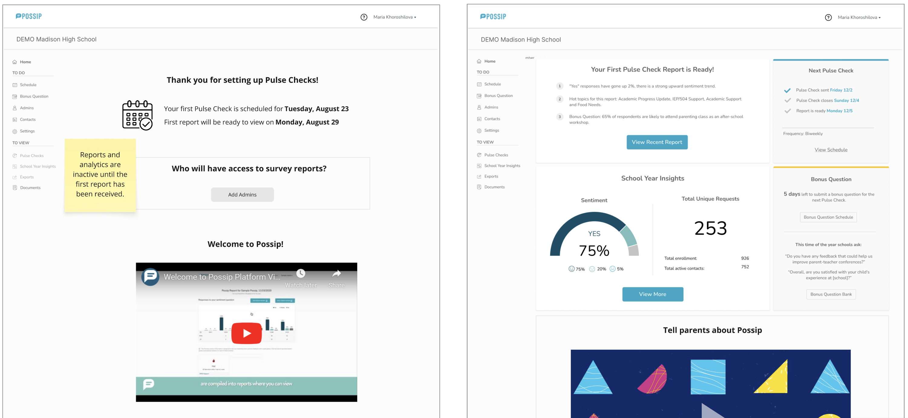

When I showed a new dashboard-style landing page to a customer, they asked:
What happens when a new user has no surveys set up yet—and there’s no data to show?
The user still had several tasks to complete before they could send their first survey and generate reports.
I saw an opportunity to turn that empty space into a helpful onboarding experience. I designed a flow that guides users through the setup tasks, then uses the time before their first survey results are available to introduce them to the platform.

The approach was simple:
- Use the existing knowledge library to surface relevant content.
- Take advantage of users’ initial curiosity about a new tool.
This wasn’t part of the original project scope. I identified the problem and designed a solution that fit within the project timeline.
